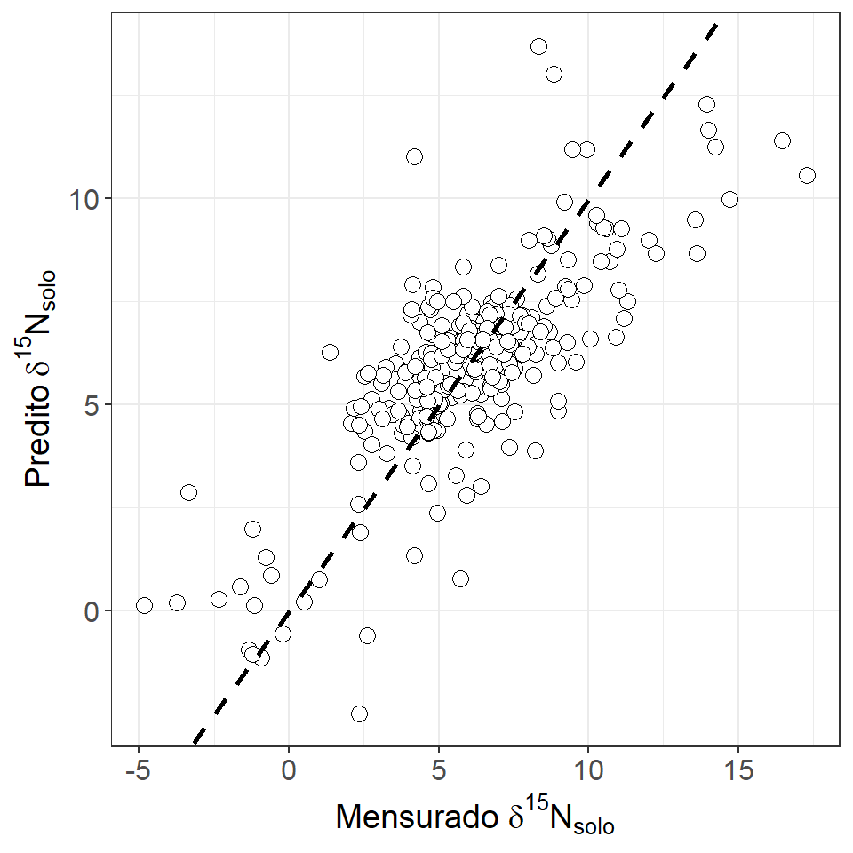
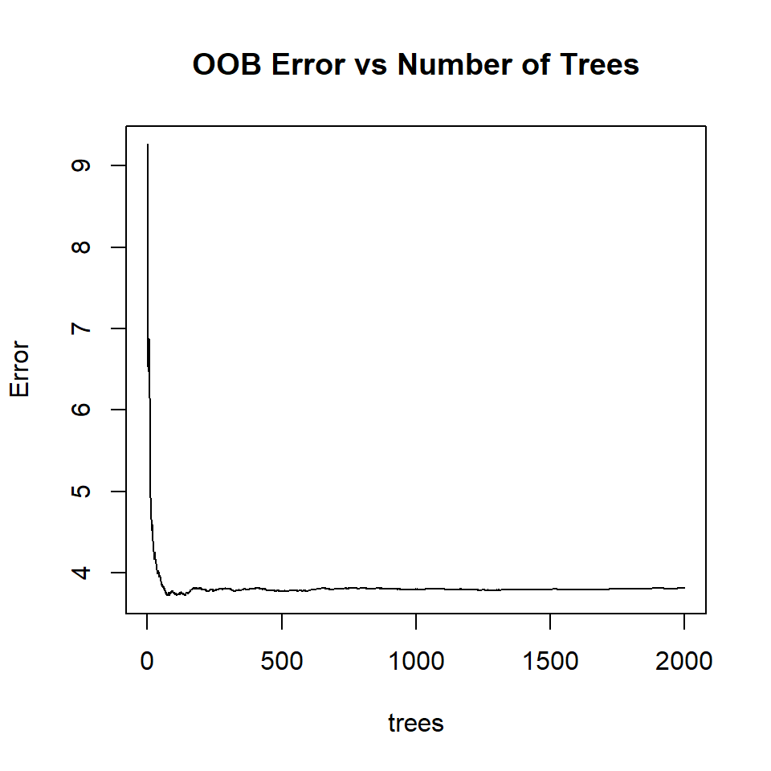
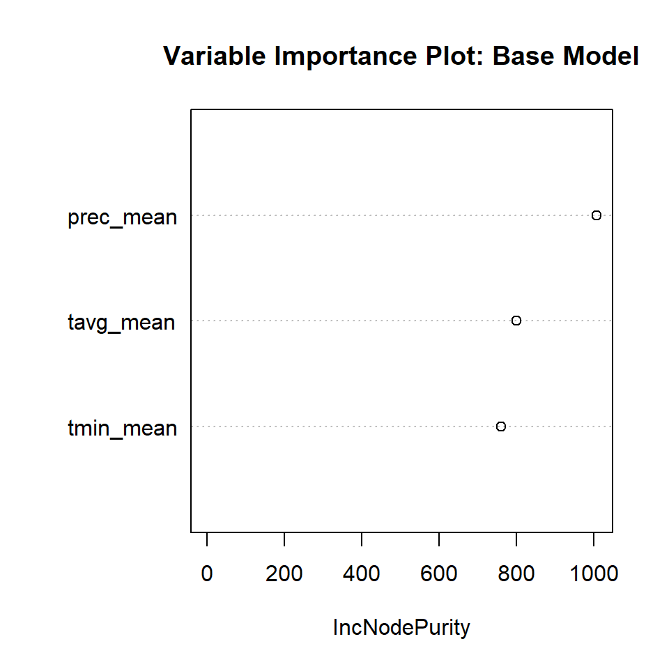
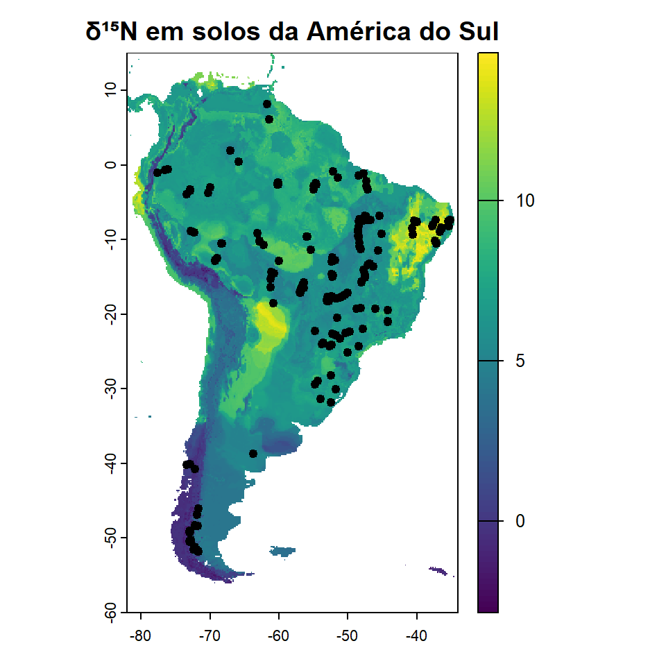

Neste módulo, aprenderemos a integrar dados geoespaciais com modelos de Machine Learning para gerar mapas preditivos (isoscapes). Como exemplo, utilizaremos o estudo de Sena-Souza et al. (2020) (https://doi.org/10.1002/ecs2.3223 ), que mapeou a variação do δ¹⁵N em solos da América do Sul, combinando dados climáticos, topográficos e de uso da terra.
O objetivo do estudo foi mostrar que métodos baseados em aprendizado de máquina, como Random Forest, podem ser mais eficientes para prever padrões espaciais de isótopos, principalmente em cenários com forte influência de variáveis ambientais.
Durante o exercício, você irá:
Preparar dados de amostras combinados com covariáveis ambientais;
Ajustar modelos de machine learning, por exemplo, o modelo Random Forest;
Avaliar a importância das variáveis no modelo;
Gerar um mapa preditivo espacial do δ¹⁵N.
Essa abordagem será a base para aplicações futuras em rastreabilidade agrícola, ambiental e modelagem de isótopos em diferentes contextos.
1. Configuração inicial
# Limpar área de trabalhorm(list =ls()) gc(reset =TRUE)
used (Mb) gc trigger (Mb) max used (Mb)
Ncells 608176 32.5 1384451 74 608176 32.5
Vcells 1115365 8.6 8388608 64 1115365 8.6
graphics.off() #Pacotes necessáriosif(!require(readxl))install.packages("readxl", dep =TRUE)
Carregando pacotes exigidos: readxl
if(!require(tidyverse))install.packages("tidyverse", dep =TRUE)
Carregando pacotes exigidos: tidyverse
── Attaching core tidyverse packages ──────────────────────── tidyverse 2.0.0 ──
✔ dplyr 1.1.4 ✔ readr 2.1.5
✔ forcats 1.0.0 ✔ stringr 1.5.1
✔ ggplot2 3.5.2 ✔ tibble 3.2.1
✔ lubridate 1.9.4 ✔ tidyr 1.3.1
✔ purrr 1.0.4
── Conflicts ────────────────────────────────────────── tidyverse_conflicts() ──
✖ dplyr::filter() masks stats::filter()
✖ dplyr::lag() masks stats::lag()
ℹ Use the conflicted package (<http://conflicted.r-lib.org/>) to force all conflicts to become errors
if(!require(terra))install.packages("terra", dep =TRUE)
Carregando pacotes exigidos: terra
terra 1.8.50
Anexando pacote: 'terra'
O seguinte objeto é mascarado por 'package:tidyr':
extract
O seguinte objeto é mascarado por 'package:knitr':
spin
if(!require(geodata))install.packages("geodata", dep =TRUE)
Carregando pacotes exigidos: geodata
Warning: pacote 'geodata' foi compilado no R versão 4.5.1
if(!require(geobr))install.packages("geobr", dep =TRUE)
Carregando pacotes exigidos: geobr
Warning: pacote 'geobr' foi compilado no R versão 4.5.1
Carregando namespace exigido: sf
if(!require(sf))install.packages("sf", dep =TRUE)
Carregando pacotes exigidos: sf
Linking to GEOS 3.13.1, GDAL 3.10.2, PROJ 9.5.1; sf_use_s2() is TRUE
if(!require(sp))install.packages("sp", dep =TRUE)
Carregando pacotes exigidos: sp
if(!require(here))install.packages("here", dep =TRUE)
Carregando pacotes exigidos: here
Warning: pacote 'here' foi compilado no R versão 4.5.1
here() starts at C:/Users/DELL/OneDrive/Documentos/Cena/Cursos_Extensao_CENA/Rbras_2025
if(!require(caret))install.packages("caret", dep =TRUE)
Carregando pacotes exigidos: caret
Carregando pacotes exigidos: lattice
Anexando pacote: 'caret'
O seguinte objeto é mascarado por 'package:purrr':
lift
if(!require(randomForest))install.packages("randomForest", dep =TRUE)
Carregando pacotes exigidos: randomForest
randomForest 4.7-1.2
Type rfNews() to see new features/changes/bug fixes.
Anexando pacote: 'randomForest'
O seguinte objeto é mascarado por 'package:dplyr':
combine
O seguinte objeto é mascarado por 'package:ggplot2':
margin
if(!require(ranger))install.packages("ranger", dep =TRUE)
Carregando pacotes exigidos: ranger
Anexando pacote: 'ranger'
O seguinte objeto é mascarado por 'package:randomForest':
importance
if(!require(VSURF))install.packages("VSURF", dep =TRUE)
Carregando pacotes exigidos: VSURF
2. Reprodutibilidade
A reprodutibilidade é um princípio fundamental da ciência, pois garante que os resultados obtidos em uma pesquisa possam ser verificados e replicados por outros pesquisadores ou em futuras análises. Assegurar que os procedimentos sejam replicáveis aumenta a transparência, a credibilidade dos dados e fortalece a robustez das conclusões.
tibble [278 × 7] (S3: tbl_df/tbl/data.frame)
$ x : num [1:278] -47.4 -47.2 -60.2 -63.1 -60 ...
$ y : num [1:278] -2.82 -3.3 -2.5 -9.18 -12.87 ...
$ d15n.obs : num [1:278] 10.72 8.76 8.6 10.05 11.18 ...
$ prec_mean: num [1:278] 166 155 198 194 166 ...
$ tavg_mean: num [1:278] 26 25.9 26.5 25.3 23.6 ...
$ tmax_mean: num [1:278] 30.7 30.8 30.5 31 30.1 ...
$ tmin_mean: num [1:278] 21.2 21 22.4 19.7 17 ...
4. Preparação dos dados
Vamos definir a variável resposta e as covariáveis que serão utilizadas na modelagem.
# Transformar tibble em SpatVector (definindo x e y como coordenadas)sites <-vect(as.data.frame(dn15_var_clim), geom =c("x", "y"), crs ="EPSG:4674")#Retirando coordenadasdn15_var_clim <- dn15_var_clim %>% dplyr::select(-x, -y)#Definindo a variável resposta e covariáveis resposta <- dn15_var_clim$d15n.obs#Preditoraspreditoras <- dn15_var_clim %>% dplyr::select(-d15n.obs)#Checando valores ausentesif (anyNA(preditoras)) {cat("Warning: Missing values found in predictors. Please handle them before proceeding.\n")print(which(is.na(predictors), arr.ind =TRUE))} else {cat("No missing values found in predictors.\n")}
No missing values found in predictors.
2 Ajuste dos modelos
Modelo Random Forest
Os algoritmos de aprendizado de máquina (machine learning - ML) tornaram-se muito populares para modelar grandes conjuntos de dados em que a forma da relação entre os preditores (também conhecidos como características) e as variáveis de resposta não é conhecida. Trabalharemos com a Random Forest, que faz parte de uma família de métodos chamada Árvores de Classificação e Regressão (CART). Os métodos CART envolvem a construção de uma árvore de decisão, em que cada ponto de ramificação na árvore representa uma decisão booleana (sim/não) com base no valor de uma característica. O fim de cada ramificação na árvore representa uma previsão diferente da variável de resposta.
Além dessa estrutura básica, o Random Forest (RF) emprega vários métodos que o tornam um método robusto e amplamente útil. Entre eles está o uso do bagging, que envolve repetir o processo de ajuste da árvore várias vezes usando subconjuntos aleatórios dos dados de treinamento para desenvolver um conjunto de muitas árvores (a “floresta”). Além disso, a RF também aplica um procedimento de bagging a cada nó de decisão em uma árvore — em vez de escolher a decisão mais informativa entre todas as características do modelo, um subconjunto aleatório de características é escolhido e avaliado para selecionar a regra de decisão para cada nó em cada árvore. No modelo ajustado, as decisões são tomadas com base na coleção de todas as árvores. Isso é útil para a análise de incertezas e também torna a Random Forest menos suscetível ao sobreajuste do que alguns outros métodos de ML.
#Nomes das preditoraspred.names<-names(preditoras)#Definindo a formula do modelo de regressãoformula_rf1 <-as.formula(paste("d15n.obs ~", paste(pred.names, collapse =" + ")))formula_rf1
Call:
randomForest(formula = formula_rf1, data = dn15_var_clim, ntree = 2000, importance = TRUE, keep.forest = TRUE)
Type of random forest: regression
Number of trees: 2000
No. of variables tried at each split: 1
Mean of squared residuals: 3.888463
% Var explained: 59.69
Os resultados do modelo RF com todas as variáveis sugere que mais de 59% da variância é explicada. O valor de MSE ficou em torno de 3.89.
Vamos dar uma olhada rápida no ajuste do modelo:
# Criar um data frame com Observado e Preditodados_plot <-data.frame(Observado = dn15_var_clim$d15n.obs,Predito = rf.mod1$predicted)# Plotar com ggplot2ggplot(dados_plot, aes(x = Observado, y = Predito)) +geom_point(shape =21, fill ="white", size =3, color ="black") +geom_abline(intercept =0, slope =1, linetype ="dashed", size =1) +labs(x =expression("Mensurado "*delta^{15}*"N"["solo"]),y =expression("Predito "*delta^{15}*"N"["solo"]) ) +theme_bw() +theme(axis.title =element_text(size =14),axis.text =element_text(size =12))
Warning: Using `size` aesthetic for lines was deprecated in ggplot2 3.4.0.
ℹ Please use `linewidth` instead.

Seleção inicial de variáveis
Até agora, ignoramos amplamente a seleção de variáveis. Durante o desenvolvimento do modelo RF faz sentido permitir que o modelo explore o máximo possível de características do conjunto de dados, para que possa descobrir as relações preditivas mais úteis. Porém ao mesmo tempo, o uso de conjuntos de características excessivos ou muito redundantes pode tornar o ajuste do modelo mais desafiador. Assim, é ideal utilizar alguma abordagem de pré-seleção de variáveis. Diante disso, optamos por utilizar o algoritmo VSURF.
# Convertendo as variáveis preditoras para o formato matricial (requirido pelo VSURF)preditoras_matrix <-as.matrix(preditoras)# Rodando VSURF para seleção de variáveis# Fixando a reprodutibilidadeset_reproducibility()
Warning in RNGkind(kind = "Mersenne-Twister", normal.kind = "Inversion", :
non-uniform 'Rounding' sampler used
Call:
randomForest(formula = formula_rf2, data = dn15_var_clim, ntree = 2000, importance = TRUE, keep.forest = TRUE)
Type of random forest: regression
Number of trees: 2000
No. of variables tried at each split: 1
Mean of squared residuals: 3.811404
% Var explained: 60.48
#Plot error OOB vs número de árvoresplot(rf.mod2, main ="OOB Error vs Number of Trees")

Os resultados entre os modelos de Random Forest (RF), com e sem a variável tmax_mean, não apresentam diferenças significativas. Isso confirma que, de fato, essa variável não contribui de maneira relevante para o poder preditivo do modelo. Além disso, observa-se que não é necessário mais de 500 arvores para ajustar o modelo RF neste exemplo.
Ajuste de Hiperparâmetros
O desenvolvimento de modelos de ML e IA geralmente envolve a tomada de decisões sobre os detalhes da estrutura do modelo e/ou os procedimentos usados para ajustá-lo. Essas decisões são refletidas como hiperparâmetros do modelo, que determinam os detalhes do modelo. Idealmente, gostaríamos de escolher os valores dos hiperparâmetros de maneira informada para otimizar o modelo resultante. Já vimos um exemplo acima, em que escolhemos o número de árvores em nossa floresta com base na relação entre o tamanho da floresta e o erro.
Como um método de ML bastante simples, há realmente apenas mais um hiperparâmetro que merece consideração na regressão RF. Ele é chamado de mtry. Lembre-se de que um componente essencial do modelo RF é que cada nó de cada árvore é selecionado com base em um subconjunto aleatório de características possíveis. O hiperparâmetro mtry determina quantas características diferentes são consideradas na seleção da regra de decisão em cada nó.
O pacote caret inclui ferramentas que oferecem suporte a fluxos de trabalho completos para o desenvolvimento do modelo CART, incluindo funções que podem ser usadas para realizar a maior parte do trabalho que fizemos acima, e vale a pena explorá-lo se você estiver começando a usar esses métodos de ML. Usaremos sua função train() para testar diferentes valores de mtry e encontrar o valor que otimiza o desempenho preditivo.
Aqui você pode ver que as diferenças entre os modelos são pequenas, mas os melhores resultados são obtidos usando o menor valor de mtry (2). Esse é o valor que teria sido escolhido por padrão pela função randomForest(), portanto, aceitar o valor padrão para esse hiperparâmetro é adequado neste caso.
Teste
Como os modelos de ML são altamente dependentes dos dados usados para ajustá-los e propensos ao sobreajuste, é importante testar seu poder preditivo usando dados que não foram usados para o treinamento do modelo. Os modelos RF têm uma característica inerente que suporta estimativas eficientes do desempenho preditivo. Lembre-se de que cada árvore de decisão é desenvolvida usando um subconjunto aleatório dos dados. Isso significa que, para cada uma das árvores, há um conjunto de dados out of bag (OOB) que não foram usados no ajuste e podem ser usados para avaliar o desempenho preditivo dessa árvore. As estatísticas de ajuste e erro que consideramos acima são baseadas em dados OOB — as previsões para cada ponto de dados são feitas usando apenas as árvores em que essa amostra não foi usada para ajustar a árvore, e essas previsões são comparadas com os valores observados.
Como nem todos os métodos de ML (ou outras abordagens de modelagem) permitem a estimativa de erro OOB, muitas vezes é útil avaliar o desempenho do nosso modelo usando um teste de divisão de dados mais tradicional, no qual primeiro dividimos os dados em conjuntos de teste e treinamento antes do ajuste do modelo. Um teste simples de divisão de dados é fácil de realizar.
# Fixando a reprodutibilidadeset_reproducibility()
Warning in RNGkind(kind = "Mersenne-Twister", normal.kind = "Inversion", :
non-uniform 'Rounding' sampler used
partition <- caret::createDataPartition(dn15_var_clim$d15n.obs, p =0.8, list =FALSE)treino <- dn15_var_clim[partition, ]teste <- dn15_var_clim[-partition, ]# AJustando o modelo com dados de treinorf.train <-randomForest(formula_rf2, data = treino, ntree =500)rf.train
Call:
randomForest(formula = formula_rf2, data = treino, ntree = 500)
Type of random forest: regression
Number of trees: 500
No. of variables tried at each split: 1
Mean of squared residuals: 3.873379
% Var explained: 59.99
# Data frame Observado x Preditodados_plot2 <-data.frame(Observado = teste$d15n.obs,Predito =predict(rf.train, teste))# Calcular MSEMSE_value <-mean((dados_plot2$Predito - dados_plot2$Observado)^2)MSE_value
O resultado com o cojunto de teste mostrou-se muito diferente da estimativa OOB mostrada acima, ou seja, é sempre importante buscar uma validação robusta para o modelo elaborado. No entanto, a validação anterior se baseia apenas em uma divisão (aleatória) dos dados em partes de teste e treinamento. Para aprimorar isso, pode-se repetir o processo acima várias vezes. Não seria difícil codificar isso sozinho, mas acontece que o caret está bem configurado para executar esse tipo de análise para você. O código abaixo é uma ligeira modificação do que usamos acima e usa o objeto fitControl para direcionar a função train() para realizar o que chamamos de validação cruzada. Para isso, optamos por utilizar o método Leave-Group-Out CV (também conhecido como Monte Carlo CV).
# Leave-Group-Out CV (também conhecido como Monte Carlo CV).fitControl <- caret::trainControl(method ="LGOCV", number =10, p =0.8)# Fixando a reprodutibidadeset_reproducibility()
Warning in RNGkind(kind = "Mersenne-Twister", normal.kind = "Inversion", :
non-uniform 'Rounding' sampler used
Random Forest
278 samples
3 predictor
No pre-processing
Resampling: Repeated Train/Test Splits Estimated (10 reps, 80%)
Summary of sample sizes: 224, 224, 224, 224, 224, 224, ...
Resampling results across tuning parameters:
mtry RMSE Rsquared MAE
2 2.093674 0.6060642 1.551354
3 2.132588 0.5928525 1.566271
RMSE was used to select the optimal model using the smallest value.
The final value used for the model was mtry = 2.
Obtemos um conjunto de métricas ligeiramente diferente aqui, mas elas são muito semelhantes às obtidas em nosso teste de dados com divisão única e na estimativa de erro OOB. A otimização e o teste de modelos de ML são um tema vasto. Para obter mais informações e exemplos de diferentes abordagens que podem ser aplicadas na modelagem CART, há um excelente texto online que acompanha o pacote caret.
Compreendendo o modelo
Entender os modelos de ML (também chamados de ML interpretável) também é um tema vasto e em constante desenvolvimento, mas existem algumas ferramentas simples que podem nos ajudar a começar a entender como nosso modelo está se comportando.
Veja o gráfico de importância das variáveis, que mostra basicamente o que seu nome sugere.
varImpPlot(rf.mod3$finalModel,main='Variable Importance Plot: Base Model')

imp<-varImp(rf.mod3$finalModel)imp$varnames <-rownames(imp) # row names to columnrownames(imp) <-NULLimp
Observa-se que a variável prec_mean tem o maior impacto para δ¹⁵N no solo para região de estudo.
Isoscape
Nessa etapa, vamos recuperar os arquivos raster gerados na primeira etapa e criar um único raster multicamada, que será utilizado para realizar a predição espacial com a função predict do pacote terra.
# Listar todos os arquivos raster na pasta 'raster/' raster_files <-list.files(path =here("raster"), pattern ='\\.tif$', full.names =TRUE) # Carregar todos os rasters em uma lista # terra ->> para carregar cada arquivo rasterraster_list <-lapply(raster_files, terra::rast) raster_list
[[1]]
class : SpatRaster
dimensions : 450, 288, 1 (nrow, ncol, nlyr)
resolution : 0.1666667, 0.1666667 (x, y)
extent : -82, -34, -60, 15 (xmin, xmax, ymin, ymax)
coord. ref. : lon/lat SIRGAS 2000 (EPSG:4674)
source : prec_mean.tif
name : mean
min value : 0.0000
max value : 595.8333
[[2]]
class : SpatRaster
dimensions : 450, 288, 1 (nrow, ncol, nlyr)
resolution : 0.1666667, 0.1666667 (x, y)
extent : -82, -34, -60, 15 (xmin, xmax, ymin, ymax)
coord. ref. : lon/lat SIRGAS 2000 (EPSG:4674)
source : tavg_mean.tif
name : mean
min value : -8.238146
max value : 29.389441
[[3]]
class : SpatRaster
dimensions : 450, 288, 1 (nrow, ncol, nlyr)
resolution : 0.1666667, 0.1666667 (x, y)
extent : -82, -34, -60, 15 (xmin, xmax, ymin, ymax)
coord. ref. : lon/lat SIRGAS 2000 (EPSG:4674)
source : tmax_mean.tif
name : mean
min value : -3.568729
max value : 34.458832
[[4]]
class : SpatRaster
dimensions : 450, 288, 1 (nrow, ncol, nlyr)
resolution : 0.1666667, 0.1666667 (x, y)
extent : -82, -34, -60, 15 (xmin, xmax, ymin, ymax)
coord. ref. : lon/lat SIRGAS 2000 (EPSG:4674)
source : tmin_mean.tif
name : mean
min value : -12.90875
max value : 25.79167
# Empilhar os rasters em um único objeto SpatRaster# terra ->> para empilhar todos os rasters em um único objetor_stack <- terra::rast(raster_list) # Verificar os nomes dos rasters names(r_stack) <-basename(raster_files) %>% tools::file_path_sans_ext() print(names(r_stack))
Finalmente, utilizaremos a nossa melhor predição para construir um mapa espacial do δ¹⁵N em solos da América do Sul. Os modelos CART (e os modelos ML/AI em geral) não oferecem uma abordagem analítica simples para estimar o erro de previsão com base na incerteza dos parâmetros (como fazem os modelos baseados em krigagem). Várias soluções para RF surgiram. A que usaremos (florestas de regressão quantílica) aproveita as diferenças nas previsões entre as árvores para calcular uma distribuição de previsões. A aplicação do método exigirá que ajustemos um novo modelo de floresta de regressão quantílica e, em seguida, o apliquemos para prever quantis específicos da distribuição de previsão. Escolheremos os percentis 16 e 84, pois correspondem a $$1 desvio padrão para uma distribuição normal.
#Prediçãoisoscape <- terra::predict(r_stack, rf.mod3, na.rm =TRUE)# Usando o pacote "ranger".# Set reproducibilityset_reproducibility()
Warning in RNGkind(kind = "Mersenne-Twister", normal.kind = "Inversion", :
non-uniform 'Rounding' sampler used
Ranger result
Call:
ranger::ranger(formula_rf2, data = dn15_var_clim, num.trees = 500, mtry = 2, quantreg = TRUE)
Type: Regression
Number of trees: 500
Sample size: 278
Number of independent variables: 3
Mtry: 2
Target node size: 5
Variable importance mode: none
Splitrule: variance
OOB prediction error (MSE): 3.766202
R squared (OOB): 0.6109378
#Quantisisoscape$ci.16<- terra::predict(r_stack, mod.qrf, type ="quantiles", quantiles =0.16,na.rm =TRUE)isoscape$ci.84<- terra::predict(r_stack, mod.qrf, type ="quantiles", quantiles =0.84,na.rm =TRUE)#SDisoscape$sd <- (isoscape$ci.84- isoscape$ci.16) /2# Verificar e criar diretório para salvar os rasters, se não existirif (!dir.exists(here("isoscape"))) dir.create(here("isoscape"))#Exportando rasterterra::writeRaster(isoscape, filename =here("isoscape", "isoscape_dn15.tif"), overwrite =TRUE)
Vejamos um plot simples da Isoscape gerada pela nossa predição.
# Visualizar a isoscapeterra::plot(isoscape[[1]], main ="δ¹⁵N em solos da América do Sul")# Adicionar os pontos amostraispoints(sites, pch =21, bg ="black", cex =0.8)

# Visualizar a isoscapeterra::plot(isoscape$sd, main ="SD")# Adicionar os pontos amostraispoints(sites, pch =21, bg ="black", cex =0.8)